Candidate List 20260303 Previous Day Next Day Section 1: New Sources (age<1d) Cosmological Afterglow
Section 2: Old (1-5d) sources observed last night placeholder
Section 1: New Afterglow/FBOT Cands Last Night (1)
1. ZTF26aajjukk (FBOT?) [Back to Top] [Share] [Trigger Swift] [Fritz ] [Lasair ]RA, Dec: 102.58635, -20.97449 6h50m20.72s, -20d-58m-28.17sGalactic (l, b): 231.6591, -9.62401 ext(g-r) = 0.36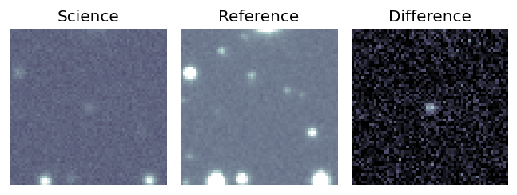
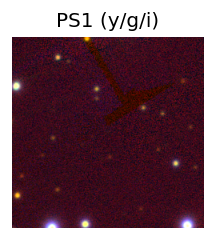
PS1: 1 source in 3 arcsec Closest: d = 8.03 arcsec photoz=0.20+/-0.06 peak abs mag = -23.31 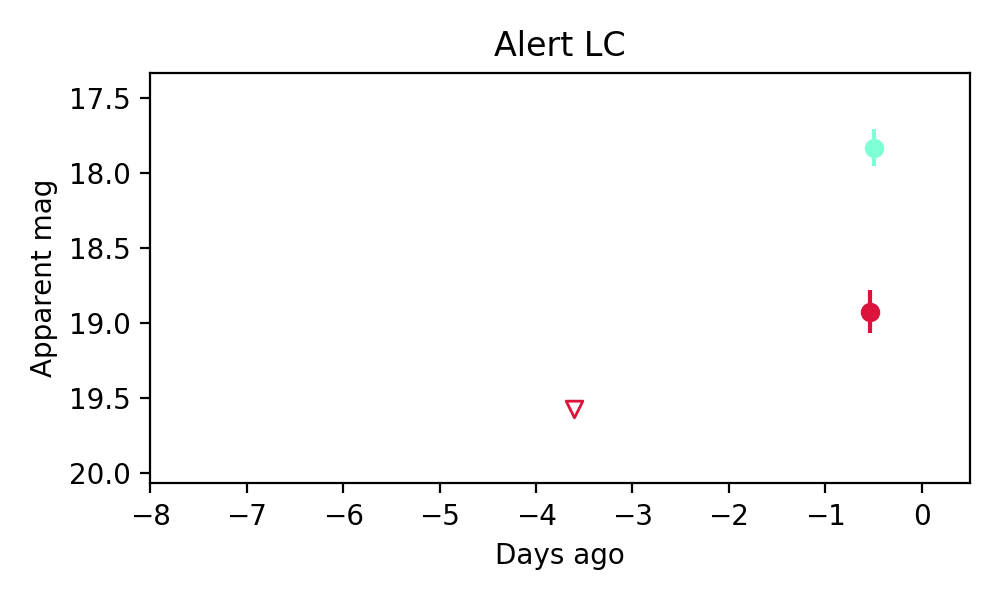
Section 2: Older Sources Observed Last Night (7)
0. ZTF26aaijdek (Afterglow?) [Back to Top] [Share] [Trigger Swift] [Fritz ] [Lasair ]RA, Dec: 128.33008, 29.84695 8h33m19.22s, 29d50m49.02sGalactic (l, b): 193.72147, 33.98022 ext(g-r) = 0.043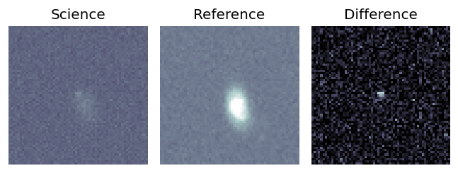
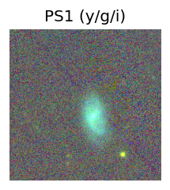
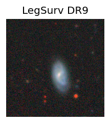
LegacySurvey: 1 sources in 3 arcsec Closest: d = 4.60 arcsec, 275.7 deg (east of north) photoz=0.15 (68% bounds 0.1, 0.32), type=EXP peak abs mag = -20.33 (68% bounds -19.5, -22.24) 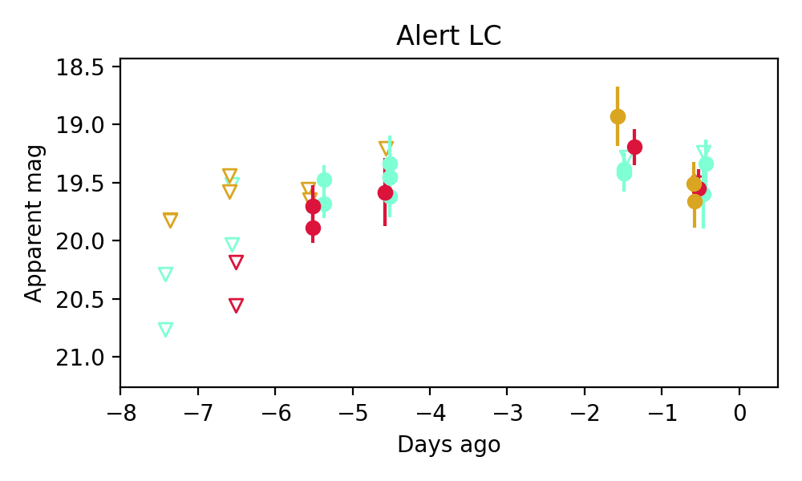
Consistent with synchrotron, g-r>0!
1. ZTF26aaimafh (Afterglow?) [Back to Top] [Share] [Trigger Swift] [Fritz ] [Lasair ]RA, Dec: 42.07022, 13.37779 2h48m16.85s, 13d22m40.04sGalactic (l, b): 161.60879, -40.55889 WARNING: -2.7 deg from ecliptic plane ext(g-r) = 0.147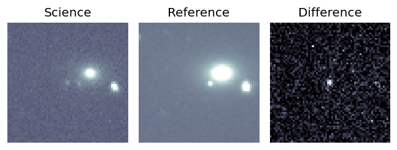
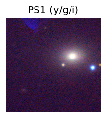
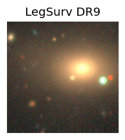
LegacySurvey: 1 sources in 3 arcsec Closest: d = 6.02 arcsec, 266.3 deg (east of north) photoz=0.1 (68% bounds 0.08, 0.12), type=PSF peak abs mag = -19.26 (68% bounds -18.77, -19.66) 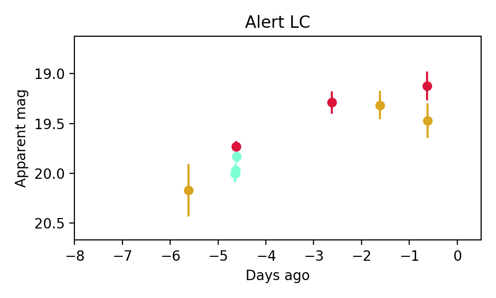
Consistent with synchrotron, g-r>0!
2. ZTF26aaiwowr (Afterglow?) [Back to Top] [Share] [Trigger Swift] [Fritz ] [Lasair ]RA, Dec: 114.24906, 11.22184 7h36m59.77s, 11d13m18.63sGalactic (l, b): 207.88773, 15.13724 ext(g-r) = 0.037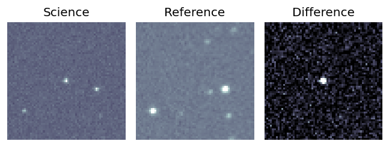
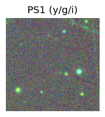
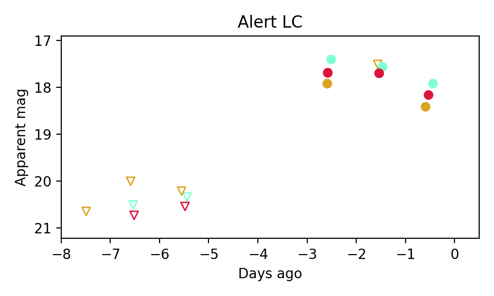
3. ZTF26aaixbao (Afterglow?) [Back to Top] [Share] [Trigger Swift] [Fritz ] [Lasair ]RA, Dec: 79.69971, 6.59409 5h18m47.93s, 6d35m38.72sGalactic (l, b): 195.86775, -17.17857 ext(g-r) = 0.218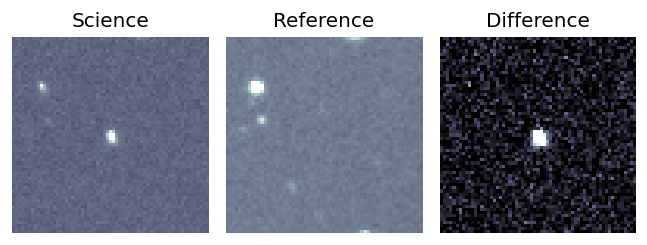
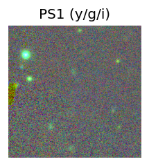
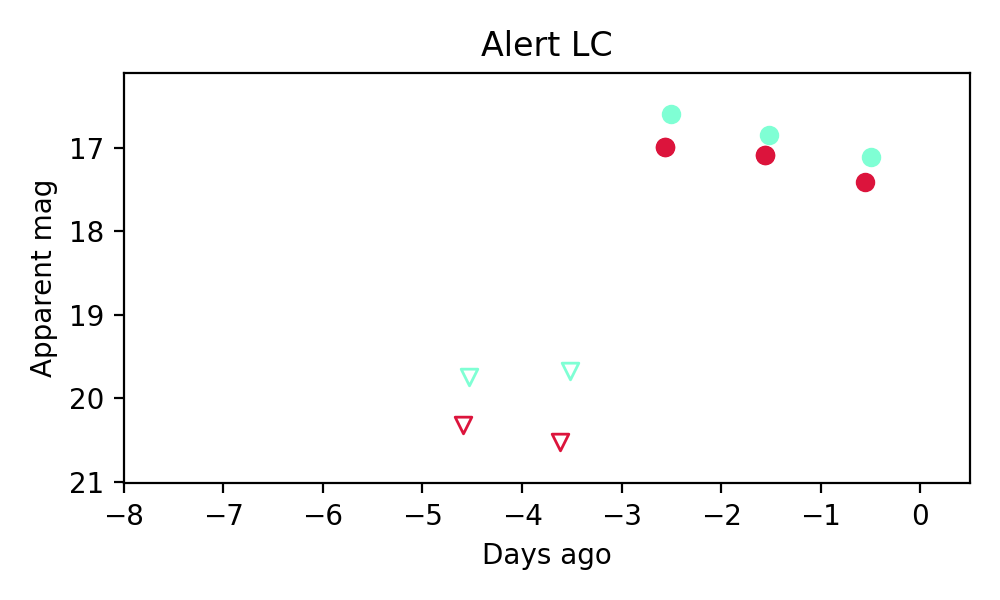
4. ZTF26aajeyiv (Afterglow?FBOT?) [Back to Top] [Share] [Trigger Swift] [Fritz ] [Lasair ]RA, Dec: 112.48268, 18.20232 7h29m55.84s, 18d12m8.36sGalactic (l, b): 200.55095, 16.48533 WARNING: -3.59 deg from ecliptic plane ext(g-r) = 0.06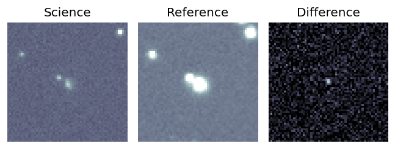
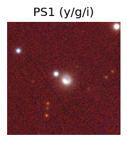
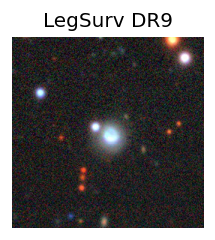
peak abs mag = -18.17 LegacySurvey: 1 sources in 3 arcsec Closest: d = 1.66 arcsec, 296.5 deg (east of north) photoz=0.16 (68% bounds 0.1, 0.24), type=SER peak abs mag = -20.17 (68% bounds -19.16, -21.18) 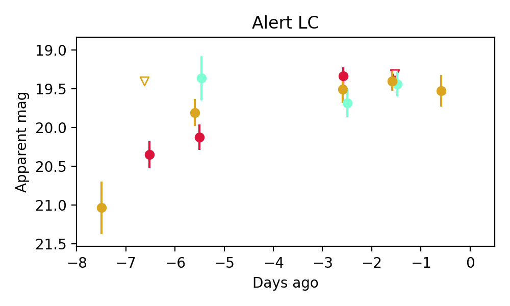
Consistent with synchrotron, g-r>0!
5. ZTF26aajilre (Afterglow?) [Back to Top] [Share] [Trigger Swift] [Fritz ] [Lasair ]RA, Dec: 107.86763, 31.18721 7h11m28.23s, 31d11m13.94sGalactic (l, b): 186.32884, 17.61325 ext(g-r) = 0.076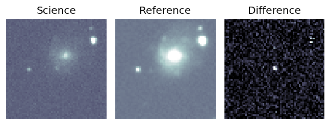
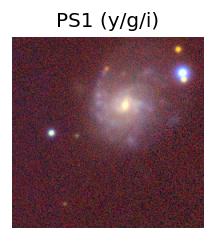
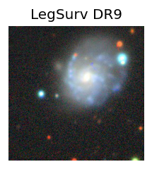
LegacySurvey: 1 sources in 3 arcsec Closest: d = 2.63 arcsec, 329.2 deg (east of north) photoz=0.01 (68% bounds 0.01, 0.02), type=PSF peak abs mag = -14.11 (68% bounds -13.57, -15.5) 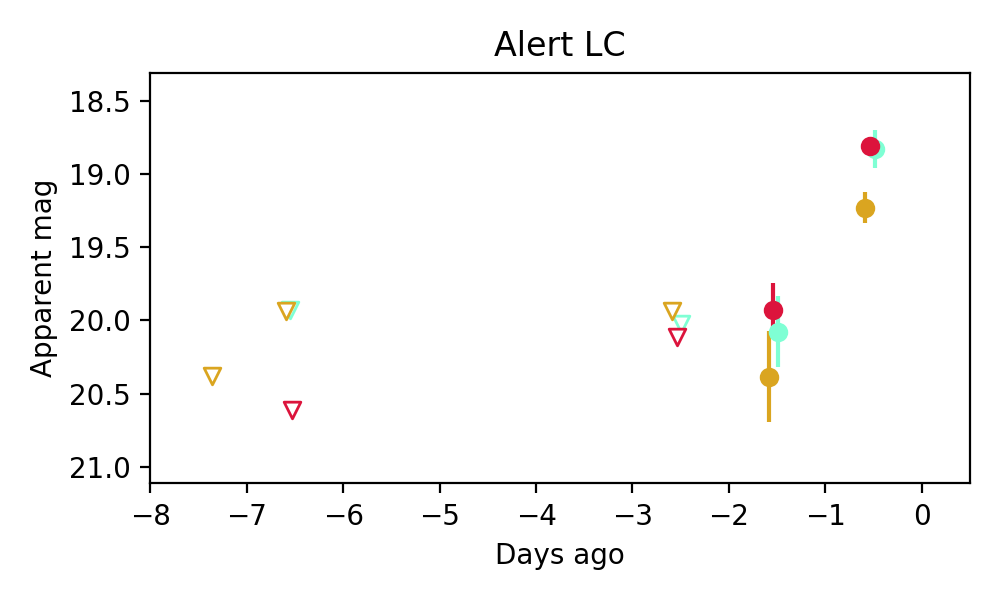
Consistent with synchrotron, g-r>0!
6. ZTF26aajjbep (FBOT?) [Back to Top] [Share] [Trigger Swift] [Fritz ] [Lasair ]RA, Dec: 108.6573, 57.23373 7h14m37.75s, 57d14m1.42sGalactic (l, b): 159.59133, 25.60014 ext(g-r) = 0.061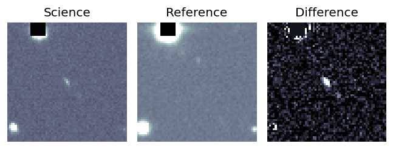
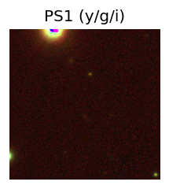
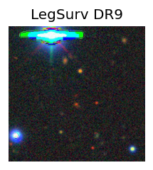
peak abs mag = -25.80 LegacySurvey: 1 sources in 3 arcsec Closest: d = 1.09 arcsec, 163.7 deg (east of north) photoz=0.96 (68% bounds 0.83, 1.06), type=REX peak abs mag = -25.71 (68% bounds -25.31, -25.98) 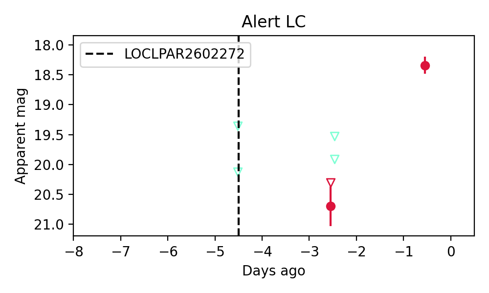